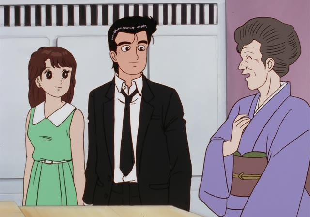
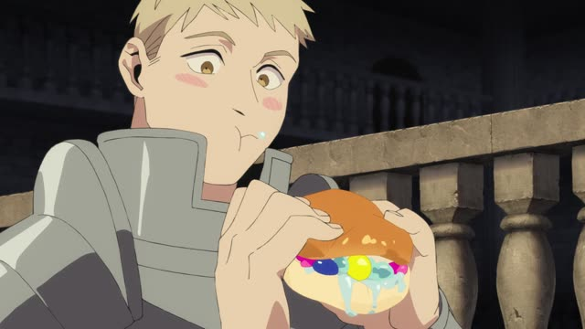
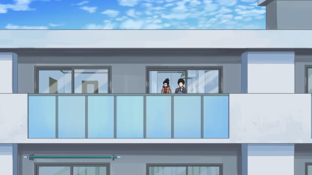

～くて・～で

Oishinbo · Episode 77
ただ うどんが好きで 毎日 打ってるだけですよ。
"I just love udon, and I make it every day, that's all."
くて and で join a describing word to what comes next, like "and".
い-adjectives drop the last い and add くて: 多い → 多くて, 安い → 安くて. One odd one: いい → よくて. な-adjectives and nouns just add で: 静かで, 学生で.
Only the end shows the politeness: です or nothing. On this card, the old lady says she just loves udon (好き is a な-adjective, so で), and that's why she makes it every day.

Dungeon Meshi · Episode 5
甘くて おいしい。
"Sweet and tasty."
To join two describing words, put the い-adjective in its くて form: 甘い → 甘くて. On this card, she takes a bite: sweet, and tasty.
Quick Examples
Your friend asks about the new ramen place.
安くて、おいしいよ。
"It's cheap and tasty."
安い → 安くて.
CasualDescribing your new apartment.
部屋は静かで、きれいです。
"The room is quiet and clean."
静か is a な-adjective, so で.
PoliteIntroducing yourself.
私は学生で、二十歳です。
"I'm a student and I'm twenty."
学生 is a noun, so で.
PoliteTalking about a café.
雰囲気がよくて、よく行くんだ。
"The vibe is nice, so I go there a lot."
いい → よくて. Here it also gives the reason.
CasualWith and without
このラーメンは安いです。おいしいです。
"This ramen is cheap. It's tasty." Two separate sentences.
このラーメンは安くて、おいしいです。
"This ramen is cheap and tasty." One smooth sentence.
Examples from Media
Demon Slayer · Episode 15
肌触りも良くて気持ちがいいですよ。
"It feels nice on the skin, and it's comfortable."
The odd one: いい → 良くて (よくて).

Kotaro Lives Alone · Episode 7
内見の予約が多くて 大変人気なんですよ。
"Lots of people have booked viewings, it's very popular."
多い → 多くて. Here it also gives the reason.
The Way of the Househusband · Episode 3
でかくて かっこいい！
"Big and cool!"
でかい → でかくて.
Kekkon Dekinai Otoko · Episode 1
男よりケンちゃんのほうが 素直でかわいいもんね。
"Ken-chan is more honest and cute than men anyway."
素直 is a な-adjective, so で. ケンちゃん is a dog.
Legal High · Episode 8
親子の絆は深くて強い。
"The bond between parent and child is deep and strong."
深い → 深くて.
Vinland Saga · Episode 21
あんたは強くて 賢い。
"You're strong and smart."

Shirokuma Cafe · Episode 20
冷たくて気持いい。
"It's cold and feels great."
冷たい drops い, adds くて.

Shirokuma Cafe · Episode 25
怖くて悪かったな。
"Well, sorry for being scary!"
Two parts: 怖い (scary) + 悪かった (my bad). くて joins them and gives the reason: my bad for being scary. Sarcastic: the kids keep saying his face is scary.
Further Reading
A Dictionary of Basic Japanese Grammar
Entry "-te" · pp. 464–467
Tae Kim's Guide to Japanese Grammar
Compound Sentences · Expressing a sequence of states